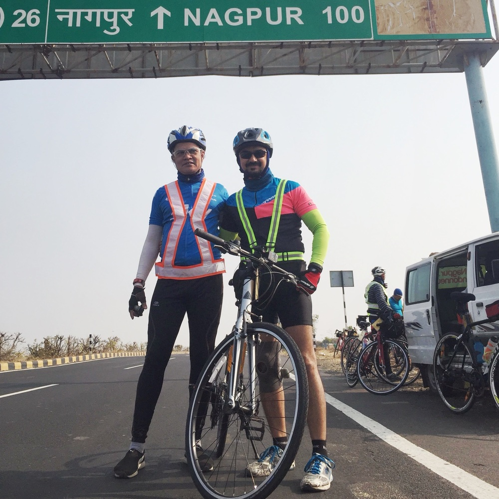
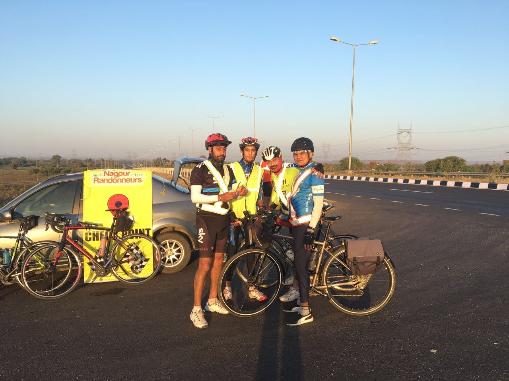
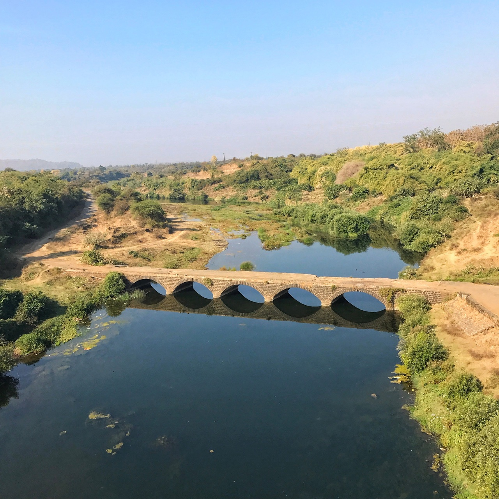

I have felt it as have many of my co-riders, both men, as well as women, have experienced it on long rides. However, most people find it very awkward discussing the problem publicly. Since I am a doctor or rather used to be a doctor a few of them did ask me about it eluding embarrassingly to the general area hence I decided to write this blog post so that they can refer to it whenever they want.
As a thumb rule whenever a nerve is compressed in any of the extremities it will cause tingling and numbness in the area it supplies. I have written about this in my earlier post dealing with numbness in hands while cycling. In the case of genital numbness, it is the pudendal nerve branches which get compressed as they pass through the perineum. This affects the penis in men and the labia and clitoris in women.
What can be done to prevent numbness of genitals?
Long rides will bring it on but understanding the exact cause can be a bit vexing. This is because the reasons can be multiple, compounding each other. Let us learn a bit about the probable causes and solutions.
Riding position and reach:
Do you ride bent down leaning forward for miles and miles? If yes then probably all you need to do is straighten up once in a while, get up in the saddle and let the pressure off. On the other hand, if the reach to your handlebar is too far you automatically lean too much and press your perineum. The simplest solution, in this case, would be to shorten the stem.
Saddle angle:
Look closely at your saddle from the side, Where it the nose of the saddle pointed? In most cases, it would be pointing straight ahead, and the saddle should be level. If the nose it pointing upwards, this happens when newbies try to fix sliding forward, it will press on the perineum leading to numbness. Make the nose level or 1 degree lower. This will result in you sliding a bit forward, but you get used to it. When you sit only your butt via the sit bones should be supporting your weight nothing else.
Seat height:
If you seat is positioned higher than needed, then you will be rocking your hips not only sideways but also back and forth - effectively grinding your perineum between the seat and your pelvis bone with every stroke. Move the seat down by half an inch or less. Better still get a bikefit. Once the height is reduced, you will be able to transmit power from your pedal stroke better and the numbness should be gone too.
Seams of the shorts/pads:
If you wear poor quality shorts either the seams or the bunching up of the gel pad can lead to numbness. Go get better quality shorts.
Different type of saddles:
If all the above does not seem to work maybe it is time to go for a different type of saddle. Look for saddles which are split in the middle with a groove to let the pressure off. Also shop around for no-nose saddle.
Stretching flexing and walking around:
Lastly, all said and done the best way to get pressure off from the area is to get your butt off the saddle! If you are old like me, ensure that you fit your shorts properly after wearing smoothing out any folds. Give your behind some rest while cycling by moving back on the saddle, shifting positions or riding standing as often as needed.
In conclusion, it can be said that if you are sensitive towards your body needs, sensible with your riding style and bicycle numb genitals can be easily tackled.
Pediatrician and a Forensic Expert. A passionate PHP geek. Currently CTO, SANIsoft. Also a cyclist, photographer, bird watcher, nature lover and a FOSS enthusiast.
Things don't go wrong one at a time, they go wrong in bunches! Unknown to me at the time of writing my last post I had strained my knee during the 600 BRM that I did. Even though I had allowed it to rest for a couple of weeks, it did not heal completely. Riding even 25km I could feel the twinges of pain. Then the weather started to cool down due to a cold wave in northern India. My arthritis which is mostly silent started to act up, the morning of 10th January I could climb the stairs in the morning only after taking support. However, the thing with arthritis is that as the day warms up, the pain disappears. Yeah, I knew at least 200km of the brevet are going to be in the cold. Lastly, I was not really satisfied with my final bike check ride either. This time my doctor mates were worried too and tried to convince me not to ride.
When things go wrong, Don't go with them! - Elvis Presley
I knew I was not 100% fit but trusting Elvis, I still decided to ride, Not only ride but determined not to quit. I kept repeating to myself - If my bicycle does not break, I won't break either! My only solace was, that as segments of 200km I had done the entire route several times and comfortably.
The day
During the 600km I had already made plans with Balraj and Sanjay that we will ride together. I did have my doubts about being able to keep up with them, but in the freshness of early morning, everything seemed bright. Balraj and I started together and quickly reached up to the first checkpoint the Katiyawad Dhaba at 54km. I got rid of the fleece jacket and woolen cap they were no longer needed. I noticed that my jacket despite cold was drenched with sweat. Swati was also here on her way to the checkpoint where she was volunteering. She got Poha for us which we gobbled down. The group with Joyti, Sarang, Sneha and Sudarshan rolled in.
I had a pack of Enerzal and we sped on to the 100km point. There was a slight tailwind, and at a point, we were speeding at 50+ kmph. The road looked beautiful in the early morning light. I had to stop and take a picture. I let Balraj go ahead while I took some photos. When I tried to go back to my ride recording app my phone crashed. The reboot took about 5 mins and drained a lot of battery. A couple of over-enthusiastic riders rolled past hollering on top of their voice, I later met them again after a few kilometers indulging in something not 100% legit by brevet rules, the details I won't bother with writing here.
100km I did in less than 4.5 hours. Good time I said to myself (considering I was doing a 400). Almost all the riders made it to the 100 point. We joked about things, clicked selfies. I was really enjoying the ride! The pain in the knee was there, but I had put my brain on ignoring it mode.

100km in good spirits (Picture credit Shakal Shukla)
I started back with Balraj, climbed the Talegaon ghat easily and had hoped to reach Kathiyawad Dhaba would be a breeze. Instead, we got some headwinds, we focused intently on pedaling. The extra effort was hurting the knee. I did not notice that the sun was getting hotter. I kept having water, but I was losing a lot of electrolytes with the sweat. I ignored the initial warning signs of Sodium depletion as well. At the checkpoint I had some food but not enough fluids. I was feeling tired. The sun continued to beat down relentlessly. We stopped for tea, waved and invited all the passing riders as well to our favorite chai tapri. I felt slight nausea but rode on. We were less than 20km from the halfway mark, what could go wrong? Most likely this is what Balraj must have thought as he sped ahead.
At one of the Chai Tapri. Myself, Balraj and Sanjay
10 more kilometer my legs suddenly turned to jelly. I just could not cycle anymore. Thankfully the cheerful quartet, Joyti, Sarang, Sneha, and Sudarshan, had come along with me from the last tea break. They all urged me to continue, I assured them I will NOT quit, but I need a break. Sudarshan stayed with me as I sat down on a heap of gravel by the roadside. I am thankful to him for staying back. This time I knew what went wrong, experience has it's value so what if only in retrospect. I dissolved 2 tabs of Fast and Up: Reload in 500ml and drank it all. Five-minute rest and I felt confident enough to ride again. I rolled into the 200km checkpoint in just a shade over 11 hours. This was still going according to my plan. I was fully aware that this was just half of the journey.
At this checkpoint which had been deliberately kept bang in the middle of the city were Balraj's mother and daughter with some great food. Thanks to them for the hearty meal. Swati was also there with some cheese sandwiches. I ate, I told Balraj to go ahead with Sanjay. Again assuring him that I won't quit. Reviewed the mistakes committed. Had overlooked removing my thermal leggings in the heat (notice at 200). Had not taken enough electrolytes. More food was needed than taken. Had not taken a painkiller when I should have. Too many of them...
First doubts about the ability to finish started creeping in. Whatever I planned, I knew I would need help in keeping me motivated to execute it. I decided to stick with the quartet for rest of the brevet as did another rider, Bhushan. Sneha is known for not leaving a rider behind! I was banking on it.
The night
The night was terrible, cold, dark roads, very painful knee, but I kept at it relentlessly. Whenever I would fall back Sneha and Joyti would let me creep up and sing "Tere karva me shamil hona chahu" and we would all laugh! Whenever I was with Sarang, he would keep a motivating speech ready. I am thankful to the three of them for this.
At the end of a particularly steep climb I was a bit behind, exhausted I called out to Bhushan to stop for a while. He offered a methi paratha which I thankfully gobbled down. I had enough water and electrolytes. At 260km I ate an omelette rolled from Sudarshan. 283 km, Pandhurna, Balaji Dhaba was a food point. Had Dal Roti. Just around midnight, we reached Teegaon - the 300 km checkpoint! Jitesh Bhai and Rajesh ji had kept hot tea ready for us. They also motivated us to keep pedaling.
From 300 km the return consisted of large segments of downhill road. As planned we stopped at every 20km to have tea till we reached Heti checkpoint - 360 km done!
Somewhere in the dark, bloodshot eyes, very tired.
The dawn
With just 40 km more I knew I had it within my grasp. My body was exhausted but I was mentally prepared and adamant, plus I had a secret weapon! A 600ml bottle of flat coca cola. I drank it all. The caffeine + sugar was the rush I needed. I also knew that this is like nitrox - burns out pretty fast. I had to go non-stop. I started pedaling as fast as I could.
Atop one of the flyover, I heard the Fajr ki azaan being called out from a nearby mosque. Though a non-believer the sound filled me with warmth - it was heralding the dawn, it was heralding the end of my ordeal, I was almost home. I started breathing easy.
At 6:36 am, in 25 hours and 6 mins, I rolled into Zero Mile.
I was limping from pain as I got down but it did not matter - I made a plan. I stuck to the Plan. I delivered.
Pediatrician and a Forensic Expert. A passionate PHP geek. Currently CTO, SANIsoft. Also a cyclist, photographer, bird watcher, nature lover and a FOSS enthusiast.
Yes! I finally did it. On 19th Feb 2017, I did a 200km brevet which secures my Super Randonneur title. For my non-cyclist friends, one is entitled to a Super Randonneur title on successfully finishing 200, 300, 400 and 600km brevet in single brevet year. The brevet year is from November to October.
A part of why I do it…
I am a very cautious randonneur. I plan my long distance rides very carefully, poring over route maps, deciding on anticipated time, what will I eat and when and so on. Given my history of ailments and injuries, I have to accept that my body is vulnerable and fragile at fifty. At the same time, I firmly know it is not worthless.
Brevets are not about competing against people, there are no podium glories to be had. I love brevets for that. It is you against yourself and the challenges you put out. There is no bragging in Randonneuring, well mostly, the reward is getting to know yourself better. At the end of a brevet having proven to my myself that I did it is deeply satisfying.
Ultra distances also give a chance to spend time with yourself. The peaceful solitude of the road, the single-minded determination, the whirr of the tires on the tarmac are hypnotic. They put you in that zone of contentment which I otherwise cannot access.
Then there is camaraderie of fellow riders. I have met some of the finest humans while cycling. Inspiring, humble, helpful. In return I try to be the same for new riders. The bond you develop with someone while indulging in a feat of endurance together is unrivaled.

With Balraj, Rajbeer and Didar Sokhi at the first checkpoint.

The route was scenic!
The uneventful ride
Being a cautious randonneur also makes you a man of habit. Thanks to Swati a lot of these things are helped along, but this time she was not in town. In fact, she was away for a few days. However, a 200km ride is no longer so anxiety inducing. Besides, I had already done the ride one way, including climbing the Sillewani ghat a couple of weeks ago. That said, if you are doing long distance riding, there is always going to be an element of doubt. You can’t take things for granted.
There was also the 600 km brevet starting a day prior, and several friends were riding it. The route chosen was a particularly tough one because Nagpur Brevets were getting a reputation for being easy peasy. I followed the chatter on WhatsApp and the news that came in was terrible headwinds and the road was indeed very tough, eight riders had quit. Wee bit worrying but hey! I was doing only a 200.
The ride did go almost flawlessly. I had the great company of the Sokhis. Nothing unexpected happened. Yes, there were some headwinds but not insurmountable. I for a while rode with some new riders, giving them tips. We reached the 100km checkpoint in good time. Had hearty lunch. The zooming down the ghat was fun but then out of nowhere the Sun became unbearably hot. I had, had enough water and electrolytes, but the sheer heat was too much. 140, 150, at around 160km, with just 40km to go and knees hurting, I took a decision to rest. I slept off at a dhaba for about 45 min. The sun had abated a bit I got back on the saddle and finished the ride at 5:32 pm about an hour later than my planned time but well within the 13.5-hour limit. Balraj, Didar Bhai and a host of others congratulated me.
I was a super randonneur. The last ride was kind of anticlimactic, but I was pleased and relieved.
What next?
For my new readers here are the links to the posts about my other rides in this super randonneuring quest.
What will I do? First I need to fix my knees. Then the plan is to continue doing the 200s every month till next season. Next season I will again attempt to be an SR. Hopefully add a 1000 km brevet to my credit as well. I am not sure if my body will play along next year but what will be will be…
Pediatrician and a Forensic Expert. A passionate PHP geek. Currently CTO, SANIsoft. Also a cyclist, photographer, bird watcher, nature lover and a FOSS enthusiast.
This is a plugin which ideally should never be needed but I had to write it because “I suppose it is tempting, if the only tool you have is a hammer, to treat everything as if it were a nail”.
Some time ago I shifted this site to use the static CMS Lektor. Lektor is written in a combination of Python and Javascript. For some time it was the perfect tool which fulfilled all my needs. I could use the features to create any kind of content I wanted. With time, creating posts with images of various types and sizes started seeming like a chore. I had to admit that Lektor at this point of time lacks a good editor on the admin side. The ideal course would be that I write code to add a kickass editor to Lektor and I have recently been admitted to the development team as well but unfortunately my python and ReactJS skills at this point are a bit lacking. Also, it was more imperative that I create content cycling related for my blog than spend time learning. I will get to that eventually but the hacker me was more tickled at the rather paradoxical idea of using WordPress as the backend to create Lektor content. I also knew that it will not take me more than a few hours to hammer out a plugin. Lektorify – is the result of three hours of banging.
WordPress is installed on my Desktop. Once Lektorify plugin is installed and activated all you need to do is give it the path of your Lektor project on the settings page. Whenever you create a new post or update a post, the plugin will create proper directories, the content.lr file and copy all the images attached to post to the directory.
Rest of my workflow which was already in place consists of running lektor build command with –watch flag and finally do a git commit and git push to deploy/publish the post on to the remote site.
Pediatrician and a Forensic Expert. A passionate PHP geek. Currently CTO, SANIsoft. Also a cyclist, photographer, bird watcher, nature lover and a FOSS enthusiast.
You can do almost any brevet on any type of bicycle. I personally know cyclists who have done 1200km on a hybrid at the same time I know someone who has done similar distance on a true road bike or racing bike. If you happen to see videos of the Paris Brest Paris, or London Edinburgh London, you will notice a further variety of machines. The tandem, the recliners, the antiques – all are fair game. So if you are already doing great distances and have no problems with your current bicycle, then carry on with it by all means.
About brevets, I had heard enough painful stories of various injuries and complaints about roads being bad to be a bit cautious when I went shopping for a cycle, which I knew would be primarily be used for randonneuring. Randonneuring is a very different sport from racing or mountain biking and requires very different equipment. Unfortunately, most mainstream bicycle makers do not bother much with understanding this particular sport. Thus, finding an optimal randonneuring bicycle can be difficult. Maybe this is the reason why many people just put up with the discomfort and disadvantages or just give up.
I did ample research and came up with a set of factors and recommendations which many people were echoing. The following are the requirements for my optimal randonneuring bicycle:
Reliability
To qualify as randonneur, you need to finish first and foremost. The bike should be carefully assembled, from parts that are not prone to breaking. Parts that tend to wear out, like spokes, cables, should be replaceable on the road.
Comfort
There are a few people who can’t make it to the finish line. More drop out because of saddle sores, shoulder, knee or neck pain combine with fatigue, becoming too much to bear. Almost all of this can be avoided with proper equipment.
Speed
During a brevet, you have plenty of time, but there is a time limit. The faster you cycle, the more time you get to sleep, eat and rest. However, speed is a subjective term here, in a brevet, minutes or even hours can be meaningless.
Beauty and Simplicity
A thing of beauty is joy forever is a cliche which is true in this case. If you love your bike, it is easier to enjoy riding when you are tired. Small deficiencies that you can tolerate when commuting to work (for example, a clinking chain, a rattling cable) will drive you mad when you are tired and exhausted. Conversely, a wonderful bike that performs flawlessly will inspire to ride further and faster. That said, beauty in a randonneuring bike is I would say an acquired taste. These are sedate beauties with subtle color accents if at all, very unlike the flashy all carbon things you might be accustomed to seeing.
If you are still planning to buy a bicycle then look for the following in the components:
Frame
Material
Look for Comfort! Do not compromise comfort for weight of the frame. Upon shopping around I found that the lightest frame I could afford was barely 1.5kg lighter than the heaviest quality frame, that is same as the weight of two 750ml water bottles. On longer rides, one invariably encounters some rough patches. A stiff frame + a rough patch can ruin your entire brevet. Steel and Cromoly steel frames tend to be better suited for these conditions.
Geometry
Bicycle fork labeled
Look for Comfort! Long reach, low handlebars, crouched down posture is great for speeding during races where one pushes hard. Randonneurs seldom push that hard, but we have to last a lot longer than even a Tour de France stage! Look for frames which allow a much more upright posture than a typical roadie, a tall but shorter reach frame. Such frames typically come with forks which have longer offset or rake. This also lends to a smoother and more stable ride. Also, see if the frame has good wheel clearance allowing a wider range of tires to be fitted as needed.
Eyelets and braze-ons
Look for Comfort! Long rides will see you carrying a lot of stuff, more on that later. The frame should have braze-ons(holes for fitting) for ideally three water bottles. Eyelets for fixing fenders as well as front and rear racks.
Wheels and Tires
Standard sized wheels with standard tire sizes are better. If you break a few spokes or need a tire, you can just walk into any bicycle shop and get one. For tires avoid narrow slicks. Aim for having at least 28mm or wider tires. I personally ride 35mm. Tires which offer extra puncture protection are well worth the extra money they cost. There is nothing more demotivating than a flat in the last leg of a long brevet when you are tired. I have seen people who gave up rather than repair consecutive punctures. I have done that too. Also look for tires which have less rolling resistance, they can make a difference of 5 to 7%. Yes, randonneuring isn’t really about speed. But if you can travel 5-7% faster using the same amount of effort, it is a good thing!
Handlebars
When you cycle for long, you should change the hand and arm positions frequently to avoid numbness and muscle stiffness. Drop handlebars more commonly or if you can get or care for mustache/trekking handlebars are your friends. Flat/straight handlebars restrict the hand positioning too much to be considered.
Gears
You will need a big spread of gears if you are going to be a super randonneur. You should be able to go fast on flats but at the same time not crush your quads while climbing. Does not matter if your climbing speed is very low but if you can do it without getting tired you can definitely makeup on the flats. Have 3 geared crankset 50/40/30T and a good 9 speed, 11-32T cassette.
Lights
Recent advances in LED and Rechargeable batteries has enabled manufacturers to create powerful lights which are compact and can last long if used wisely. This has mostly obviated the need for hub dynamos which were favored previously. You should, however, remember to carry spare batteries/power banks. You may want to check if the light you are purchasing can be operated while it is charging via a power bank.
Brevets will have checkpoints and you will pass through villages, so no heavy duty luggage is needed but do try to get a good quality handlebar bag which has a cue sheet/mobile carrier. This typically needs a small front rack as well. I have not been able to find a good bag with cuesheet, so I make do with a very small handlebar bag and very lightweight panniers in the rear.
Off the shelf bicycles
Not everyone can custom assemble a bicycle. There are a few categories which major brands offer that are suited more than others for randonneuring, and they are not really advertised as randonneuring bikes. Look for bicycles in endurance/sportif categories for a more race like experience then tick off features from the above list. The other categories which make good randonneuring cycles are light/utility tourers and beyond road commuters.
However, if you already own a cycle and want to start randonneuring don’t despair, like said in the beginning almost any cycle is fine but you can start enhancing it incrementally as you increase the distance.
200 km: A bag
Once you are riding long distances, you will need at least some supplies. During winter months perhaps a jacket which you will hopefully remove and keep aside later in the day. A puncture kit, a multitool and so on…. don’t be tempted to carry a backpack, it puts the load on your back. Let your bike carry the weight. The easiest solution is an under-seat bag. It straps onto most of the bikes without problems, and the impact on the bike’s handling is negligible. However, the drawback is that you have to stop to access your luggage. Consider handlebar bag that combines cuesheet holder. They keep your luggage accessible while riding. Unfortunately, most production bikes sold today have handlebars and cables that are not ideal for bags like the one mentioned. You can none the less shop around and see if you can find a bag which fits your bicycle.
300 km: Tires
Buy the tires with the least rolling resistance combined with the best puncture protection, also get something which is at least 28mm wide. Gone are the days when you had to opt for one or the other. Even though a bit expensive you get good tires which offer good rolling and puncture resistance. Beware of putting puncture protection tapes in narrow tires. I have seen punctures due to tape edges in narrow tires.
400 km: Lights
At 400 km you are likely to be riding half your brevet in the dark. By now you also know if you are going to continue randonneuring or not. Invest in good lights. You can easily forgo dynamo hubs for rechargeable LED lights. Carry spare batteries/power bank.
600 km: Wheels and Handlebar
At this distance whatever helps conserve energy and increases reliability is a great help. Buy wheels with good hubs. Ensure the spokes are evenly stressed. If your bike can take it opt for ergonomic handlebars. Your bars should support your hands well and not put pressure on your nerves. This will a long way in preventing numb hands and possible nerve damage.
Year 2 or 3
You have been at it for long and are likely in it for long. By now you know all the limitations of your current bike, and you will know exactly what you want more and what you don’t want. Consider getting a new one. If you can afford it buy components and have it assembled exactly as per your liking.
Conclusion
I know many of you might have come here wanting a simpler answer – Buy X brand Y model fitted with A,B & C. I do have favourites but I don’t want to mention them. Randonneuring can be a thrilling, life-changing experience. At the same time, it does have an element of risk. I want you to take an informed decision after doing your own research. After all, you know best what you need the most.
Drop HandlebarTrekking HandlebarHandlebar bag with cuesheet holder, a popular item with RandonneursHandlebar setupsMarin Four CornersMarin NicasioKona SutraMasi Speciale Randonneur
P.S. These photos are just representative of the desired characteristics. Am not endorsing a model or a brand.
Pediatrician and a Forensic Expert. A passionate PHP geek. Currently CTO, SANIsoft. Also a cyclist, photographer, bird watcher, nature lover and a FOSS enthusiast.